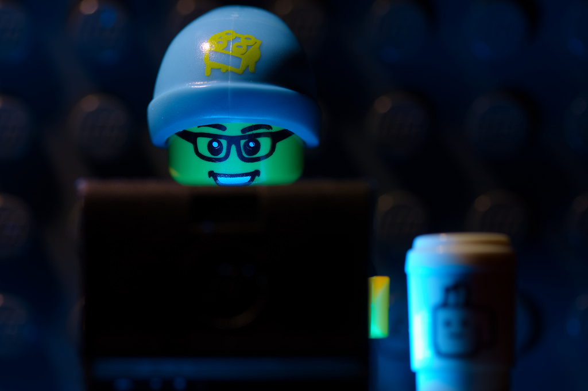

For our second portfolio project I created a website about the 7 wonders of the ancient world. I chose this for a few reasons;
to start, it had to fit the theme "Bones of our Past", a project from The Heritage Jam.
The Ancient Wonders are of the past, more specifically our human past, therefore by interpreting Bones of our Past as human past
we can see how this project fits the theme.
Next, I chose the 7 wonders because it is something I wanted to learn more about. I had heard of the wonders before but have never
researched it much. This project was the perfect opportunity to explore this interest.
For this project I mainly wanted to focus on the map. I tried out Carto for the first time to make it,
and I definitely had some troubles. After spending a few hours at home being unable to even open myself a new map in the right location
I gave up and asked my professor for help in our lab class. Dr. Cook helped me get started and I was able to make the map how I envisioned
it to be. Once finished I tried to enter the url into my github pages but the url I had was not working. I finally figured out that there
are multiple "publish" buttons that need to be clicked before you can get to the right url, I was using the wrong one.
When I finally had everything ready with the map on my website, I discovered I had made a mistake in the map, placing the Lighthouse
of Alexandria in the wrong location. Some more time was spent on tinkering with the map for that, but the lighthouse is now in the correct
place.
In the future I think I will keep working on learning digital arch one step at a time. It is hard to learn how to use all of these websites
that make things for you, and how to insert things properly while coding, but with the help of Google, Dr. Cook, and the coursepack I think I will
manage. The main things that went wrong in my project were easily fixable with the right knowledge, so I will just keep learning as I go.
Furthermore, I think that my finished project is quite successful. I was able to learn how to use new software, research something
I have been interested in for a long time, and create a learning experience for anyone visiting my website. I think that these three
facts make this project successful in digital archaeology. Learning and applying new software is very important for me as a digital
archaeologist, and creating something that other people can benefit from and learn from is what my end goal is in this discipline.
First blog post
Portfolio 1 project review
I made this website as a project for my anth 495 class. I designed this website to create a digital presence for myself in the realm of anthropology and archaeology. I highlight two aspects of my life that I find very important; my educational career and my treeplanting adventures. These two things describe me well so I decided to add them to my website and include photos of me doing what I love.
At first I had no idea how to edit pages other than the index.html, I was confused as to where the other pages were located in my Github repository. Next I was confused about uploading images. I was not sure as to what size would work, so I spent awhile cropping and resizing images to the same size as the images the website came with, only to find that any of my horizontal images could work without editing them. Vertical images, however, did not show. I was also unsure about where my posts would show up. I am still not sure how I am going to do it with future posts, as I only have one "featured post" page. This is something I will think about over the next little while before my next post. In the end I think my project is quite sucessful; it creates a space for me to:
1. show my online presence in anthropology
2. showcase my newfound skills (although very minimal) at coding
3. host any future projects for this class and in my future anthropological career
4. blog about said projects
 If I were a piece of lego, this would be me learning to code.Photo from Jeff Jackowski, Flickr
Click here to see my twitter!